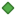

<!doctype html>
<html lang="en">
    <head>
        <meta charset="utf-8">
        <meta http-equiv="X-UA-Compatible" content="IE=edge">
        <meta name="viewport" content="initial-scale=1,user-scalable=no,maximum-scale=1,width=device-width">
        <meta name="mobile-web-app-capable" content="yes">
        <meta name="apple-mobile-web-app-capable" content="yes">
        <link rel="stylesheet" href="css/leaflet.css">
        <link rel="stylesheet" href="css/L.Control.Layers.Tree.css">
        <link rel="stylesheet" href="css/qgis2web.css">
        <link rel="stylesheet" href="css/fontawesome-all.min.css">
        <link rel="stylesheet" href="css/leaflet-control-geocoder.Geocoder.css">
        <link rel="stylesheet" href="css/leaflet-measure.css">
        <style>
        html, body, #map {
            width: 100%;
            height: 100%;
            padding: 0;
            margin: 0;
        }
        </style>
        <title>STPs under SBM(U)2.0 with Land Status</title>
    </head>
    <body>
        <div id="map">
        </div>
        <script src="js/qgis2web_expressions.js"></script>
        <script src="js/leaflet.js"></script>
        <script src="js/L.Control.Layers.Tree.min.js"></script>
        <script src="js/leaflet-svg-shape-markers.min.js"></script>
        <script src="js/leaflet.rotatedMarker.js"></script>
        <script src="js/leaflet.pattern.js"></script>
        <script src="js/leaflet-hash.js"></script>
        <script src="js/Autolinker.min.js"></script>
        <script src="js/rbush.min.js"></script>
        <script src="js/labelgun.min.js"></script>
        <script src="js/labels.js"></script>
        <script src="js/leaflet-control-geocoder.Geocoder.js"></script>
        <script src="js/leaflet-measure.js"></script>
        <script src="data/AP_1.js"></script>
        <script src="data/ULB_Boundary_2.js"></script>
        <script src="data/STPs_3.js"></script>
        <script>
        var map = L.map('map', {
            zoomControl:false, maxZoom:28, minZoom:1
        }).fitBounds([[10.086710865574403,71.06709442851556],[21.44491265757968,96.40268423507277]]);
        var hash = new L.Hash(map);
        map.attributionControl.setPrefix('<a href="https://github.com/tomchadwin/qgis2web" target="_blank">qgis2web</a> &middot; <a href="https://leafletjs.com" title="A JS library for interactive maps">Leaflet</a> &middot; <a href="https://qgis.org">QGIS</a>');
        var autolinker = new Autolinker({truncate: {length: 30, location: 'smart'}});
        // remove popup's row if "visible-with-data"
        function removeEmptyRowsFromPopupContent(content, feature) {
         var tempDiv = document.createElement('div');
         tempDiv.innerHTML = content;
         var rows = tempDiv.querySelectorAll('tr');
         for (var i = 0; i < rows.length; i++) {
             var td = rows[i].querySelector('td.visible-with-data');
             var key = td ? td.id : '';
             if (td && td.classList.contains('visible-with-data') && feature.properties[key] == null) {
                 rows[i].parentNode.removeChild(rows[i]);
             }
         }
         return tempDiv.innerHTML;
        }
        // add class to format popup if it contains media
		function addClassToPopupIfMedia(content, popup) {
			var tempDiv = document.createElement('div');
			tempDiv.innerHTML = content;
			if (tempDiv.querySelector('td img')) {
				popup._contentNode.classList.add('media');
					// Delay to force the redraw
					setTimeout(function() {
						popup.update();
					}, 10);
			} else {
				popup._contentNode.classList.remove('media');
			}
		}
        var title = new L.Control({'position':'topright'});
        title.onAdd = function (map) {
            this._div = L.DomUtil.create('div', 'info');
            this.update();
            return this._div;
        };
        title.update = function () {
            this._div.innerHTML = '<h2>STPs under SBM(U)2.0 with Land Status</h2>';
        };
        title.addTo(map);
        var abstract = new L.Control({'position':'bottomleft'});
        abstract.onAdd = function (map) {
            this._div = L.DomUtil.create('div',
            'leaflet-control abstract');
            this._div.id = 'abstract'

                abstract.show();
                return this._div;
            };
            abstract.show = function () {
                this._div.classList.remove("abstract");
                this._div.classList.add("abstractUncollapsed");
                this._div.innerHTML = 'NCPE Infrastructure India (p) Ltd.';
        };
        abstract.addTo(map);
        var zoomControl = L.control.zoom({
            position: 'topleft'
        }).addTo(map);
        var measureControl = new L.Control.Measure({
            position: 'topleft',
            primaryLengthUnit: 'meters',
            secondaryLengthUnit: 'kilometers',
            primaryAreaUnit: 'sqmeters',
            secondaryAreaUnit: 'hectares'
        });
        measureControl.addTo(map);
        document.getElementsByClassName('leaflet-control-measure-toggle')[0].innerHTML = '';
        document.getElementsByClassName('leaflet-control-measure-toggle')[0].className += ' fas fa-ruler';
        var bounds_group = new L.featureGroup([]);
        function setBounds() {
        }
        map.createPane('pane_OSMStandard_0');
        map.getPane('pane_OSMStandard_0').style.zIndex = 400;
        var layer_OSMStandard_0 = L.tileLayer('http://tile.openstreetmap.org/{z}/{x}/{y}.png', {
            pane: 'pane_OSMStandard_0',
            opacity: 1.0,
            attribution: '<a href="https://www.openstreetmap.org/copyright">© OpenStreetMap contributors, CC-BY-SA</a>',
            minZoom: 1,
            maxZoom: 28,
            minNativeZoom: 0,
            maxNativeZoom: 19
        });
        layer_OSMStandard_0;
        map.addLayer(layer_OSMStandard_0);
        function pop_AP_1(feature, layer) {
            var popupContent = '<table>\
                    <tr>\
                        <td colspan="2">' + (feature.properties['OID_'] !== null ? autolinker.link(feature.properties['OID_'].toLocaleString()) : '') + '</td>\
                    </tr>\
                    <tr>\
                        <td class="visible-with-data" id="Name"colspan="2"><strong>Name</strong><br />' + (feature.properties['Name'] !== null ? autolinker.link(feature.properties['Name'].toLocaleString()) : '') + '</td>\
                    </tr>\
                    <tr>\
                        <td colspan="2">' + (feature.properties['Shape_Area'] !== null ? autolinker.link(feature.properties['Shape_Area'].toLocaleString()) : '') + '</td>\
                    </tr>\
                    <tr>\
                        <th scope="row">Area in SQ.KM</th>\
                        <td class="visible-with-data" id="Ara">' + (feature.properties['Ara'] !== null ? autolinker.link(feature.properties['Ara'].toLocaleString()) : '') + '</td>\
                    </tr>\
                    <tr>\
                        <th scope="row">Population(2024)</th>\
                        <td>' + (feature.properties['Population'] !== null ? autolinker.link(feature.properties['Population'].toLocaleString()) : '') + '</td>\
                    </tr>\
                </table>';
            var content = removeEmptyRowsFromPopupContent(popupContent, feature);
			layer.on('popupopen', function(e) {
				addClassToPopupIfMedia(content, e.popup);
			});
			layer.bindPopup(content, { maxHeight: 400 });
        }

        function style_AP_1_0() {
            return {
                pane: 'pane_AP_1',
                opacity: 1,
                color: 'rgba(0,0,0,1.0)',
                dashArray: '',
                lineCap: 'square',
                lineJoin: 'bevel',
                weight: 2.0,
                fillOpacity: 0,
                interactive: true,
            }
        }
        map.createPane('pane_AP_1');
        map.getPane('pane_AP_1').style.zIndex = 401;
        map.getPane('pane_AP_1').style['mix-blend-mode'] = 'normal';
        var layer_AP_1 = new L.geoJson(json_AP_1, {
            attribution: '',
            interactive: true,
            dataVar: 'json_AP_1',
            layerName: 'layer_AP_1',
            pane: 'pane_AP_1',
            onEachFeature: pop_AP_1,
            style: style_AP_1_0,
        });
        bounds_group.addLayer(layer_AP_1);
        map.addLayer(layer_AP_1);
        function pop_ULB_Boundary_2(feature, layer) {
            var popupContent = '<table>\
                    <tr>\
                        <td colspan="2">' + (feature.properties['Shape_Area'] !== null ? autolinker.link(feature.properties['Shape_Area'].toLocaleString()) : '') + '</td>\
                    </tr>\
                    <tr>\
                        <th scope="row">UN_ID</th>\
                        <td class="visible-with-data" id="UN_ID">' + (feature.properties['UN_ID'] !== null ? autolinker.link(feature.properties['UN_ID'].toLocaleString()) : '') + '</td>\
                    </tr>\
                    <tr>\
                        <th scope="row">Name of ULB</th>\
                        <td class="visible-with-data" id="Name_ULB">' + (feature.properties['Name_ULB'] !== null ? autolinker.link(feature.properties['Name_ULB'].toLocaleString()) : '') + '</td>\
                    </tr>\
                    <tr>\
                        <th scope="row">Total No of Projects</th>\
                        <td class="visible-with-data" id="Total_ulb">' + (feature.properties['Total_ulb'] !== null ? autolinker.link(feature.properties['Total_ulb'].toLocaleString()) : '') + '</td>\
                    </tr>\
                    <tr>\
                        <th scope="row">No of STP</th>\
                        <td class="visible-with-data" id="No_STP">' + (feature.properties['No_STP'] !== null ? autolinker.link(feature.properties['No_STP'].toLocaleString()) : '') + '</td>\
                    </tr>\
                    <tr>\
                        <th scope="row">No of NSTP</th>\
                        <td class="visible-with-data" id="No_NSTP">' + (feature.properties['No_NSTP'] !== null ? autolinker.link(feature.properties['No_NSTP'].toLocaleString()) : '') + '</td>\
                    </tr>\
                    <tr>\
                        <th scope="row">Status of Construction</th>\
                        <td class="visible-with-data" id="Status_con">' + (feature.properties['Status_con'] !== null ? autolinker.link(feature.properties['Status_con'].toLocaleString()) : '') + '</td>\
                    </tr>\
                    <tr>\
                        <th scope="row">Status of Project</th>\
                        <td class="visible-with-data" id="Status_STP">' + (feature.properties['Status_STP'] !== null ? autolinker.link(feature.properties['Status_STP'].toLocaleString()) : '') + '</td>\
                    </tr>\
                    <tr>\
                        <th scope="row">Total Population</th>\
                        <td class="visible-with-data" id="Total_Pop">' + (feature.properties['Total_Pop'] !== null ? autolinker.link(feature.properties['Total_Pop'].toLocaleString()) : '') + '</td>\
                    </tr>\
                    <tr>\
                        <th scope="row">Total Cost in Cr.</th>\
                        <td class="visible-with-data" id="Total_Cost">' + (feature.properties['Total_Cost'] !== null ? autolinker.link(feature.properties['Total_Cost'].toLocaleString()) : '') + '</td>\
                    </tr>\
                </table>';
            var content = removeEmptyRowsFromPopupContent(popupContent, feature);
			layer.on('popupopen', function(e) {
				addClassToPopupIfMedia(content, e.popup);
			});
			layer.bindPopup(content, { maxHeight: 400 });
        }

        function style_ULB_Boundary_2_0() {
            return {
                pane: 'pane_ULB_Boundary_2',
                opacity: 1,
                color: 'rgba(31,120,180,1.0)',
                dashArray: '',
                lineCap: 'square',
                lineJoin: 'bevel',
                weight: 2.0,
                fillOpacity: 0,
                interactive: true,
            }
        }
        map.createPane('pane_ULB_Boundary_2');
        map.getPane('pane_ULB_Boundary_2').style.zIndex = 402;
        map.getPane('pane_ULB_Boundary_2').style['mix-blend-mode'] = 'normal';
        var layer_ULB_Boundary_2 = new L.geoJson(json_ULB_Boundary_2, {
            attribution: '',
            interactive: true,
            dataVar: 'json_ULB_Boundary_2',
            layerName: 'layer_ULB_Boundary_2',
            pane: 'pane_ULB_Boundary_2',
            onEachFeature: pop_ULB_Boundary_2,
            style: style_ULB_Boundary_2_0,
        });
        bounds_group.addLayer(layer_ULB_Boundary_2);
        map.addLayer(layer_ULB_Boundary_2);
        function pop_STPs_3(feature, layer) {
            var popupContent = '<table>\
                    <tr>\
                        <td colspan="2">' + (feature.properties['UN_ID'] !== null ? autolinker.link(feature.properties['UN_ID'].toLocaleString()) : '') + '</td>\
                    </tr>\
                    <tr>\
                        <th scope="row">District Name</th>\
                        <td class="visible-with-data" id="DIST_NAME">' + (feature.properties['DIST_NAME'] !== null ? autolinker.link(feature.properties['DIST_NAME'].toLocaleString()) : '') + '</td>\
                    </tr>\
                    <tr>\
                        <th scope="row">Name of ULB</th>\
                        <td class="visible-with-data" id="ULB_NAME">' + (feature.properties['ULB_NAME'] !== null ? autolinker.link(feature.properties['ULB_NAME'].toLocaleString()) : '') + '</td>\
                    </tr>\
                    <tr>\
                        <th scope="row">STP Location</th>\
                        <td class="visible-with-data" id="LOCATION">' + (feature.properties['LOCATION'] !== null ? autolinker.link(feature.properties['LOCATION'].toLocaleString()) : '') + '</td>\
                    </tr>\
                    <tr>\
                        <th scope="row">Capacity in MLD</th>\
                        <td class="visible-with-data" id="CAPACITY_M">' + (feature.properties['CAPACITY_M'] !== null ? autolinker.link(feature.properties['CAPACITY_M'].toLocaleString()) : '') + '</td>\
                    </tr>\
                    <tr>\
                        <th scope="row">TYPE</th>\
                        <td class="visible-with-data" id="TYPE">' + (feature.properties['TYPE'] !== null ? autolinker.link(feature.properties['TYPE'].toLocaleString()) : '') + '</td>\
                    </tr>\
                    <tr>\
                        <th scope="row">TECHNOLOGY</th>\
                        <td class="visible-with-data" id="TECHNOLOGY">' + (feature.properties['TECHNOLOGY'] !== null ? autolinker.link(feature.properties['TECHNOLOGY'].toLocaleString()) : '') + '</td>\
                    </tr>\
                    <tr>\
                        <th scope="row">Land Ownership</th>\
                        <td class="visible-with-data" id="LAND_OWNER">' + (feature.properties['LAND_OWNER'] !== null ? autolinker.link(feature.properties['LAND_OWNER'].toLocaleString()) : '') + '</td>\
                    </tr>\
                    <tr>\
                        <th scope="row">Land Required</th>\
                        <td class="visible-with-data" id="LAND_REQ">' + (feature.properties['LAND_REQ'] !== null ? autolinker.link(feature.properties['LAND_REQ'].toLocaleString()) : '') + '</td>\
                    </tr>\
                    <tr>\
                        <th scope="row">Status of Possession</th>\
                        <td class="visible-with-data" id="STATUS_POS">' + (feature.properties['STATUS_POS'] !== null ? autolinker.link(feature.properties['STATUS_POS'].toLocaleString()) : '') + '</td>\
                    </tr>\
                    <tr>\
                        <th scope="row">Project Status(20-09-2024)</th>\
                        <td class="visible-with-data" id="PROJ_ST_1">' + (feature.properties['PROJ_ST_1'] !== null ? autolinker.link(feature.properties['PROJ_ST_1'].toLocaleString()) : '') + '</td>\
                    </tr>\
                    <tr>\
                        <th scope="row">Project Status(25-09-2024)</th>\
                        <td class="visible-with-data" id="PROJ_ST_2">' + (feature.properties['PROJ_ST_2'] !== null ? autolinker.link(feature.properties['PROJ_ST_2'].toLocaleString()) : '') + '</td>\
                    </tr>\
                </table>';
            var content = removeEmptyRowsFromPopupContent(popupContent, feature);
			layer.on('popupopen', function(e) {
				addClassToPopupIfMedia(content, e.popup);
			});
			layer.bindPopup(content, { maxHeight: 400 });
        }

        function style_STPs_3_0(feature) {
            switch(String(feature.properties['TYPE'])) {
                case 'NSTP':
                    return {
                pane: 'pane_STPs_3',
                shape: 'diamond',
                radius: 6.0,
                opacity: 1,
                color: 'rgba(61,128,53,1.0)',
                dashArray: '',
                lineCap: 'butt',
                lineJoin: 'miter',
                weight: 2.0,
                fill: true,
                fillOpacity: 1,
                fillColor: 'rgba(84,176,74,1.0)',
                interactive: true,
            }
                    break;
                case 'STP':
                    return {
                pane: 'pane_STPs_3',
                shape: 'diamond',
                radius: 6.0,
                opacity: 1,
                color: 'rgba(50,87,128,1.0)',
                dashArray: '',
                lineCap: 'butt',
                lineJoin: 'miter',
                weight: 2.0,
                fill: true,
                fillOpacity: 1,
                fillColor: 'rgba(182,72,165,1.0)',
                interactive: true,
            }
                    break;
            }
        }
        map.createPane('pane_STPs_3');
        map.getPane('pane_STPs_3').style.zIndex = 403;
        map.getPane('pane_STPs_3').style['mix-blend-mode'] = 'normal';
        var layer_STPs_3 = new L.geoJson(json_STPs_3, {
            attribution: '',
            interactive: true,
            dataVar: 'json_STPs_3',
            layerName: 'layer_STPs_3',
            pane: 'pane_STPs_3',
            onEachFeature: pop_STPs_3,
            pointToLayer: function (feature, latlng) {
                var context = {
                    feature: feature,
                    variables: {}
                };
                return L.shapeMarker(latlng, style_STPs_3_0(feature));
            },
        });
        bounds_group.addLayer(layer_STPs_3);
        map.addLayer(layer_STPs_3);
        var osmGeocoder = new L.Control.Geocoder({
            collapsed: true,
            position: 'topleft',
            text: 'Search',
            title: 'Testing'
        }).addTo(map);
        document.getElementsByClassName('leaflet-control-geocoder-icon')[0]
        .className += ' fa fa-search';
        document.getElementsByClassName('leaflet-control-geocoder-icon')[0]
        .title += 'Search for a place';
        var overlaysTree = [
            {label: 'STPs<br /><table><tr><td style="text-align: center;"></td><td>NSTP</td></tr><tr><td style="text-align: center;"></td><td>STP</td></tr></table>', layer: layer_STPs_3},
            {label: ' ULB_Boundary', layer: layer_ULB_Boundary_2},
            {label: ' AP', layer: layer_AP_1},
            {label: "OSM Standard", layer: layer_OSMStandard_0, radioGroup: 'bm' },]
        var lay = L.control.layers.tree(null, overlaysTree,{
            //namedToggle: true,
            //selectorBack: false,
            //closedSymbol: '&#8862; &#x1f5c0;',
            //openedSymbol: '&#8863; &#x1f5c1;',
            //collapseAll: 'Collapse all',
            //expandAll: 'Expand all',
            collapsed: true,
        });
        lay.addTo(map);
        setBounds();
        </script>
    </body>
</html>
